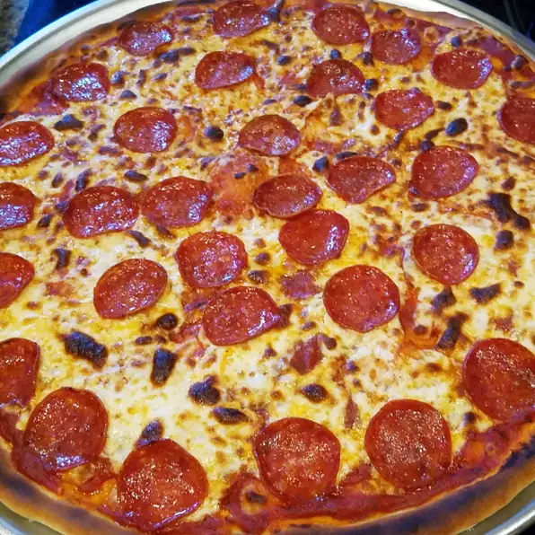

Description
Pepperoni pizza is an American pizza variety which includes one of the
country's most beloved toppings. Pepperoni is actually a corrupted form of
peperoni (one “p”), which denotes a large pepper in Italian, but nowadays
it denotes a spicy salami, usually made with a mixture of beef, pork, and
spices.
The popularity of pepperoni pizza had only started to rise in the 1950s.
Nowadays, beef pepperoni pizza is the most popular pizza variety, but
there are also versions such as fish pepperoni pizza and port pepperoni
pizza. The preparation varies from one state to another, but the
popularity of this pizza has made it a staple across the United States,
and it’s usually prepared simply with mozzarella, tomato sauce, and
pepperoni.
Ingridients
- ½ (12 ounce) can CONTADINA® Tomato Paste
- 1 teaspoon dried oregano, crushed
- 1 teaspoon dried basil, crushed
- ½ teaspoon garlic powder
- ½ teaspoon onion powder
- ½ teaspoon sugar
- ½ teaspoon salt
- ¼ teaspoon black pepper
- 3 ¼ cups all-purpose flour, or more as needed
-
2 (.25 ounce) envelopes FLEISCHMANN'S® Pizza Crust Yeast or RapidRise®
Yeast
- 1 tablespoon sugar
- 1 ½ teaspoons salt
- 1 ⅓ cups very warm water (120 degrees F to 130 degrees F)
- ⅓ cup oil
- 1 (6 ounce) package HORMEL® Pepperoni
- 1 cup shredded mozzarella cheese, or more to taste
Steps
-
For sauce: Combine all sauce ingredients with 1/2 cup water in a medium
bowl; set aside for flavors to develop while making crust. Freeze
remaining paste .
-
For crusts: Combine 2 cups of flour with the dry yeast, sugar and salt.
Add the water and oil and mix until well blended (about 1 minute).
Gradually add enough remaining flour slowly, until a soft, sticky dough
ball is formed.
-
Knead for about 4 minutes, on a floured surface, until dough is smooth
and elastic. Add more flour, if needed. (If using RapidRise® Yeast, let
dough rest, covered, for 10 minutes.)
-
Divide dough in half. Pat each half (with floured hands) into a 12-inch
greased pizza pan OR roll dough to fit pans.
-
For pizzas: Preheat oven to 425 degrees F. Top crusts with sauce,
pepperoni and cheese.
-
Bake for 18 to 20 minutes until crusts are browned and cheese is bubbly.
For best results, rotate pizza pans between top and bottom oven racks
halfway through baking.
Return to top
Return to home